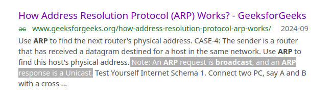

Apibūdinkite kiekvieną OSI modelio sluoksnį ir pateikite pavyzdžius, kas veikia tame sluoksnyje.
Taikomasis - programos inicijuoja užklausas
Interneto - HTTP ir SMTP ir panašūs protokolai yra sukūriami
...
... - Paketas šifruojamas su TLS ir pan.
Tinklo - Parenkamas maršrutas, perduodami paketai su UDP / TCP
Transporto - Priskiriami fiziniai adresai per ARP
Fizinis - fiziškai kažkokiu būdu nusiunčiamas paketas
| 7. Taikomasis | Vartotojui, čia yra HTTP, SMTP (Simple Main Transfer Protocol) ir FTP (File ...) |
| 6. Atvaizdavimo | Duomenų formatavimas, suspaudimas ir užšifravimas |
| 5. Sesijos | Paspaudžia ranką, prie paketo prideda išsiuntimo laiką ir t.t. |
| 4. Transporto | TCP ir UDP, prižiūri, kad paketai būtų nusiųsti, patikrina juos dėl klaidų ir surušiuoja pagal laiką |
| 3. Tinklo | Išsiaiškina greičiausią kelią paketams pasiekti gavėją, sutvarko adresavimą, čia: IP, ICMP ir RIP |
| 2. Ryšio | Veikia su MAC adresais |
| 1. Fizinis | Pavyzdžiui, kabelis arba Wi-Fi |
Čia iš mano tinklų užrašų, jei neklystu originaliai paimta iš Moodle ir tiesiog interneto
Kuo skiriasi transporto ir tinklo sluoksniai OSI modelyje?
Tinklo dirba su viešais tinklais ir TCP, UDP paketų tipais
O transporto yra vietiniame tinkle ir dirba su ARP paketais
Tinklo sluoksnis ieško maršrutų, o Transporto siunčia ir rūpinasi UDP ir TCP paketais.
Transporto sluoksnis
Kuris OSI sluoksnis atsakingas už adresavimą ir maršruto parinkimą?
Tinklo
Tinklo, tiesiog
Palyginkite MAC ir IP adresus – kuo jie skiriasi ir kam naudojami?
MAC yra fizinis mašinos adresas, jis nesikeičia, yra vietiniame tinkle.
IP yra virtualus tinklo mazgo adresas, jis net nebūtinai nusako vieną kompiuterį, užtat naudojamas kaip kelias į kompiuterį ir vietiniame, ir viešuose tinkluose
MAC adresas yra fizinis, skirtas unikaliai identifikuoti kompiuterį, o IP yra skirtas identifikuoti tinklo mazgą.
Truputi žemiau yra skyrius: „Difference Between MAC Address and IP Address“
Kas yra „broadcast“ tinkluose ir kokį vaidmenį jis atlieka ARP veikime?
Kai paketas nusiunčiamas į broadcast adresą, jis yra perduodamas visiems tinklo mazgams.
ARP paketai yra perduodami transliaciniu būdu.
Broadcast (tinkluose) - būdas perduoti žinutę visiems dalyviams vienu metu.
ARP (adresų rezoliucijos protokas) yra siunčiamas transliaciniu(broadcast) būdu
Vikipedija „Broadcasting“
Jų serveris numirė, tai čia tiesiog ekrano nuotrauka...

Kaip ARP gali būti išnaudojamas atakoms?
Bet kuris kompiuteris gali pasakyti(perduoti savo MAC), kad jo IP adresas yra toks, kurio nori ARP paketo siuntėjas,
nors jo IP iš tikro yra kitoks ir kreipiamasi iš vis ne į tą kompiuterį.
Aš parašiau teisingai.
ARP užnuodijimas yra „klaidingas“ vertimas tarp IP ir MAC. Bet kuris įrenginys tinkle gali atsakyti į ARP kreipimus
Citata: For example, if Computer A “asks” for the MAC address of Computer B, an attacker at Computer C can respond and Computer A would accept this response as authentic.
„ARP Poisoning“ tinklaraštis
Kaip kompiuteris sužino MAC adresą, kai žinomas tik IP adresas?
Kitų:
Padaro transliacinę užklausą visam tinkle, paklause visų to tiklo kompiuterių, kad,
jei jų IP adresas yra toks ir toks, jie tegul atsiunčia savo MAC adresą.
Kompiuteris-1 padaro ARP užklausą visam tinklui, kitas kompiuteris su teisingu IP adresu nusiunčia savo MAC kompiuteriui-1.
Svarbu: skyrius „IP Address to MAC Address Translation“
Paaiškinkite, kaip ARP veikia, kai siuntėjas ir gavėjas yra skirtinguose tinkluose.
Netiesiogiai. Pirmiausia IP paketas turi nukeliauti iš siuntėjo vietinio tinklo į gavėjo ir
tik tada galima daryti transliacinio adreso užklausą arba nurodyti MAC paketo headeryje.
Man atrodo, atsakiau teisingai.
Tipo, MAC gali būti naudojamas tik LAN. Taigi, paketas su MAC pasiekia routerį ir tada tam paketui priskiria IP adresą, su IP adresa numaršrutizuojamas į kitą routerį, ir į kitą LAN.
Tada tame antrame LAN jau vėl naudojamas MAC iki kol pasiekia hostą...
_________ _________
| | _________________ _______ _______________________ _______ _________________ | |
| | | | p a k e | / \ | | | p a k e | / \ | | p a k e | | |
`----+----' ===> | M A C | t a s...| ===> | routeris | ===> | I P | M A C | t a s...| ===> | routeris | ===> | M A C | t a s...| ===> `----+----'
| |_______|_________| \ _______ / |_____|_______|_________| \ _______ / |_______|_________| |
-=- -=-
Paaiškinkite skirtumą tarp tinklo adreso, transliacijos adreso ir galimų IP adresų.
Tinklo adresas yra 0-inis. Pagal kaukę, hostų adreso dalis turi būti nulis.
Transliacinis toks pats kaip tinklo, bet hostų adreso dalis turi būti pilna vienetukų (dvejetainėje skaičiavimo sistemoje).
Galimi IP adresai yra visi kurie liko, hostų dalį yra ir nuliukų, ir vienetukų.
Man atrodo, atsakiau gerai. Čia kalba daugiau apie tinklo adresą,
tipo, kad anksčiau kreipimas veikdavo kaip broadcastas, dabar jau nebėra labai svarbu, nors senesnės programos dar vis gali atsikratyti paketų...
Be to, aš čia varau per dvejetainę skaičiavimo sistemą: 11111111, o ne dešimtainę: 255, nes potinkliai atsikrato gražaus: 255
Ką reiškia, kai potinklio kaukė yra 255.255.255.240?
Liko 14 galimų hostų
...
Čia reikia paversti 240 į dvejetainę sistemą, gauni: 11110000
Tada, kad gautum hostų skaičių:
1. suskaičiuoji kiek yra nuliukų (yra 4)
2. naudoji formulę: hostai = 2nuliukai - 2
3. 24 - 2 = 16 - 2 = 14
Kaip versti dešimtainius skaičius (mažesnius už 256) į dvejetainius: (dar nesu šito paaiškinęs suprantamai... sėkmės!)
1. Prisimink skaičių 128 (čia yra 27)
2. Jei skaičius yra daugiau arba lygus 128, prirašyk prie atsakymo 1 ir atimk 128 iš dabartinio skaičiaus
240 ≥ 128, taigi ats.: 1??? ????, 240 - 128 = 112
3. Padalink 128 per pus. Kartok antrą žingsnį.
112 ≥ 64, taigi ats.: 11?? ????, 112 - 64 = 48
4. Kartok trečią žingsnį.
48 ≥ 32, taigi ats.: 111? ????, 48 - 32 = 16
5. ...
16 ≥ 16, taigi ats.: 1111 ????, 16 - 16 = 0
6. Jei lieka nulis, toliaus bus tik nuliukai.
ats.: 1111 0000
Paaiškinkite, kaip potinkliai padeda sumažinti tinklo apkrovą.
Transliacines užklausas reikia nusiųsti į mažiau kompiuterių
Atsakiau teisingai
Pirmas punktas
Kas yra VLAN ir kokias problemas jis padeda išspręsti?
Virtualus vietinis tinklas. Atskiria tinklą. Vėl, transliacines užklausos siuntinėti yra mažiau darbo. Segmentavimas vistiek atneša ir biški saugumo.
Čia irgi teisingai, dėl saugumo buvo ir tas Cisco pavyzdys su banku, ir ARP užnuodijimas.
Kaip VLAN skiriasi nuo fizinio tinklo segmentavimo?
VLAN per komutatorius, LAN per maršrutizatorių
LAN yra tiesiog įrenginiai sujungti laidais arba Wi-Fi, VLAN gali naudoti tuos pačius laidus ir pan., bet yra atskirtas dar ir logiškai/virtualiai.
VLAN pigesnis už LAN
Čia svarbu -- pirma pastraipa ir lentelė
Kuo naudinga logiškai atskirti vartotojus į skirtingus VLAN?
Žinai kuriam kompanijos pastato aukšte, kam nors nutiko problema su tinklu.
Griečiau
Saugiau
Pritariu sau...
Paaiškinkite skirtumą tarp TCP ir UDP protokolų.
TCP saugus, lėtas, surušiuotas pagal laiką protokolas
UDP tiesiog išsviedžia paketus į maždaug gavėjo kryptį ir tikisi, kad jie nukeliaus (sprendžiant iš HTTP 3, šiandien nukeliauja...).
Ir vėl, pritariu sau, nors dar galiu pridėti: su TCP reikia „paspausti ranką“ (standartinis terminas) prieš siunčiant paketus.
Aš anksčiau rašydavau serverius (programoms) su UDP ir TCP, tai šitą žinau neblogai
Kaip RIP sąveikauja su potinkliais ir kokios problemos gali kilti su V1 versija?
RIP nesąveikauja su potinkliais. Kaukės yra ignoruojamos, žiūrima tik į adreso klasę. kad nesąveikauja ir yra problema.
RIPv1, pasirodo, neveikia tik su VLSM (kur potinkliai turi skirtingas kaukes)..?
Tipo, visi potinkliai tinkle turi turėti tokio pačio dydžio kaukę.
Pirma pastraipa
Kaip galima nustatyti, ar du IP adresai priklauso tam pačiam potinkliui?
Jei kaukės vienodos ir adresai vienodi, tada priklauso
Jei kaukės skiriasi ir ilgesnės kaukės dalis (kuri nėra trumpesnėje kaukėje) adrese yra tik nuliukai, irgi priklauso
Jei kaukės skiriasi ir adresai skiriasi, tada nepriklauo
Paaiškinime, tiesiog sako patikrinti adresus ten kur kaukėje yra tinklo dalis.
Adrese gali skirtis tik kaukės hostų dalis.
Čia irgi paaiškina
Kas atsitinka, kai maršrutizatorius negali rasti tinkamo maršruto į paskirties adresą?
Pranešama gavėjui. Bent jau su ICMP ir TCP tai tikrai. UDP, turbūt, mažiau.
Nu velniop.
Suradau šitą forumų postą.
Tipo, tiesiog pameta paketą...
Sudaryti ir sukonfiguruoti tinklą pagal nuotrauką:

Visa mano tinklo konfiguracija (daug teksto)
SWITCH0
VLAN Name Status Ports
---- -------------------------------- --------- -------------------------------
1 default active Fa0/3, Fa0/4, Fa0/5, Fa0/6
Fa0/7, Fa0/8, Fa0/9, Fa0/10
Fa0/11, Fa0/12, Fa0/13, Fa0/14
Fa0/15, Fa0/16, Fa0/17, Fa0/18
Fa0/19, Fa0/20, Fa0/21, Fa0/22
Fa0/23, Fa0/24
10 VLAN10 active
20 VLAN20 active
1002 fddi-default active
1003 token-ring-default active
1004 fddinet-default active
1005 trnet-default active
interface FastEthernet0/1
switchport mode trunk
!
interface FastEthernet0/2
switchport mode trunk
interface FastEthernet0/12
switchport mode trunk
SWITCH1
VLAN Name Status Ports
---- -------------------------------- --------- -------------------------------
1 default active Fa0/3, Fa0/4, Fa0/5, Fa0/6
Fa0/7, Fa0/8, Fa0/9, Fa0/10
Fa0/11, Fa0/12, Fa0/13, Fa0/14
Fa0/15, Fa0/16, Fa0/17, Fa0/18
Fa0/19, Fa0/20, Fa0/21, Fa0/22
Fa0/23, Fa0/24
10 VLAN10 active
20 VLAN20 active
1002 fddi-default active
1003 token-ring-default active
1004 fddinet-default active
1005 trnet-default active
interface FastEthernet0/1
switchport mode trunk
!
interface FastEthernet0/2
switchport mode trunk
interface FastEthernet0/12
switchport mode trunk
ROUTER0
Codes: C - connected, S - static, I - IGRP, R - RIP, M - mobile, B - BGP
D - EIGRP, EX - EIGRP external, O - OSPF, IA - OSPF inter area
N1 - OSPF NSSA external type 1, N2 - OSPF NSSA external type 2
E1 - OSPF external type 1, E2 - OSPF external type 2, E - EGP
i - IS-IS, L1 - IS-IS level-1, L2 - IS-IS level-2, ia - IS-IS inter area
* - candidate default, U - per-user static route, o - ODR
P - periodic downloaded static route
Gateway of last resort is not set
193.16.0.0/30 is subnetted, 1 subnets
C 193.16.0.0 is directly connected, Serial0/0/0
interface FastEthernet0/0
no ip address
duplex auto
speed auto
shutdown
!
interface FastEthernet0/1
no ip address
duplex auto
speed auto
shutdown
!
interface Serial0/0/0
ip address 193.16.0.1 255.255.255.252
clock rate 2000000
!
interface Vlan1
no ip address
shutdown
!
router rip
version 2
ROUTER1
Codes: C - connected, S - static, I - IGRP, R - RIP, M - mobile, B - BGP
D - EIGRP, EX - EIGRP external, O - OSPF, IA - OSPF inter area
N1 - OSPF NSSA external type 1, N2 - OSPF NSSA external type 2
E1 - OSPF external type 1, E2 - OSPF external type 2, E - EGP
i - IS-IS, L1 - IS-IS level-1, L2 - IS-IS level-2, ia - IS-IS inter area
* - candidate default, U - per-user static route, o - ODR
P - periodic downloaded static route
Gateway of last resort is not set
C 192.168.0.0/16 is directly connected, FastEthernet0/0
193.16.0.0/30 is subnetted, 1 subnets
C 193.16.0.0 is directly connected, Serial0/0/0
interface FastEthernet0/0
ip address 192.168.0.1 255.255.0.0
duplex auto
speed auto
!
interface FastEthernet0/1
no ip address
duplex auto
speed auto
shutdown
!
interface Serial0/0/0
ip address 193.16.0.2 255.255.255.252
!
interface Vlan1
no ip address
shutdown
!
router rip
version 2
!
ip classless